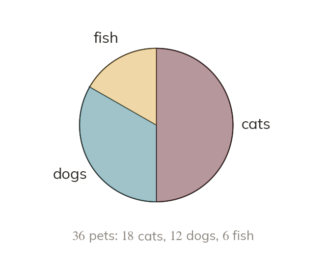

The circle is the total
A pie chart shares a circle between the categories. The whole stands for the total frequency. Half of the total gets half of the circle.
A pie chart shares a circle between the categories. The whole stands for the total frequency, so a category with half of the total gets half of the circle.